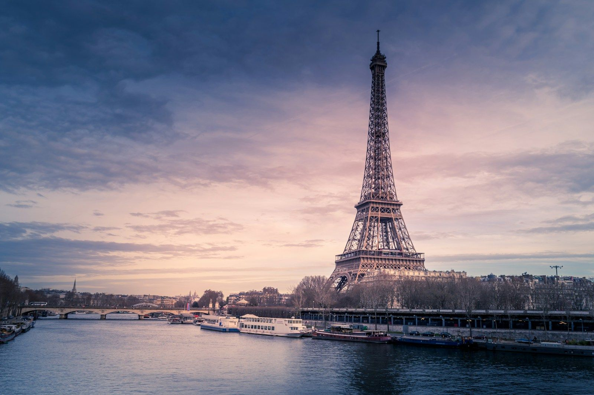
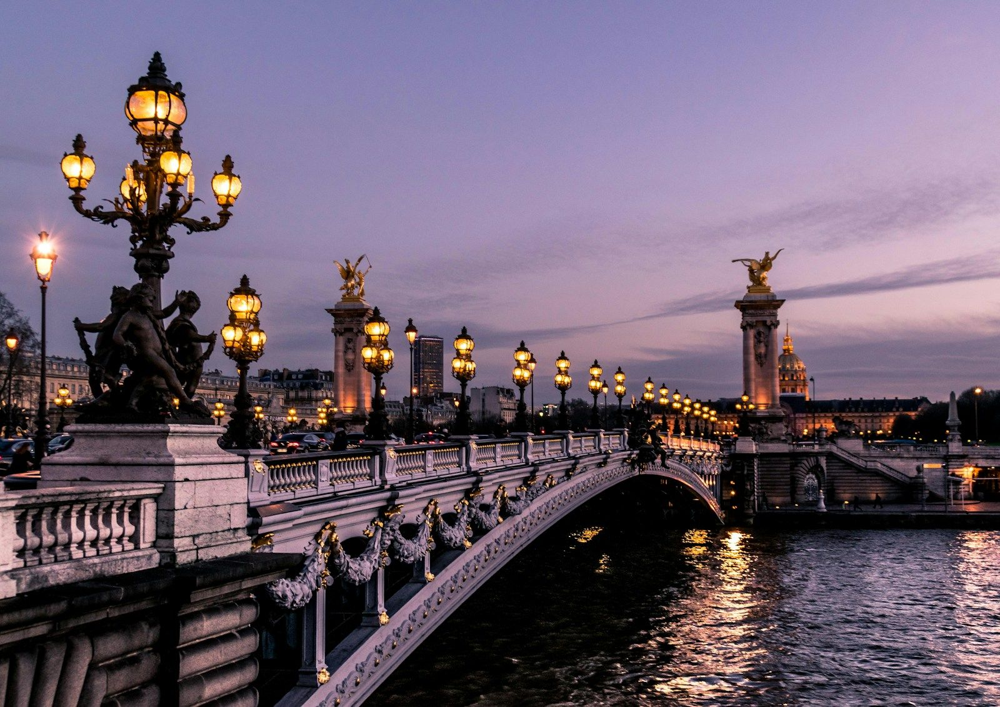
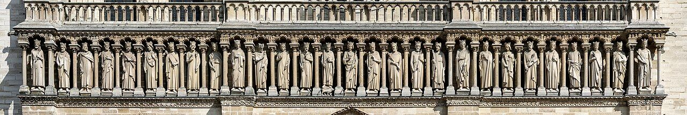
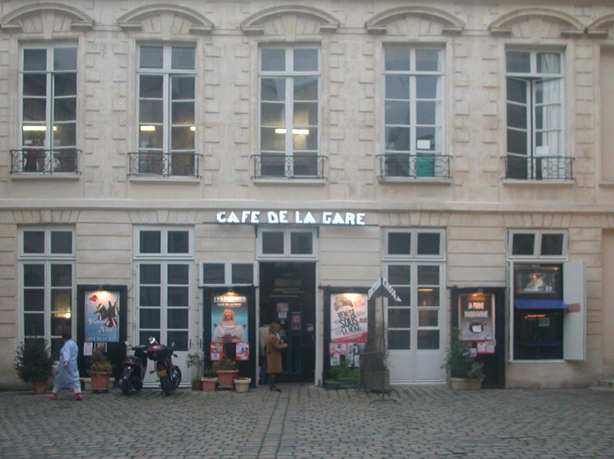
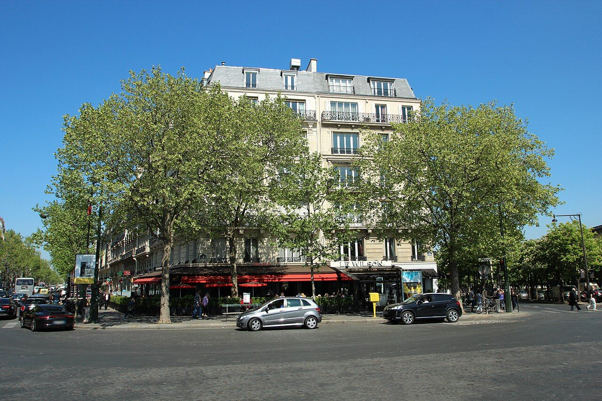
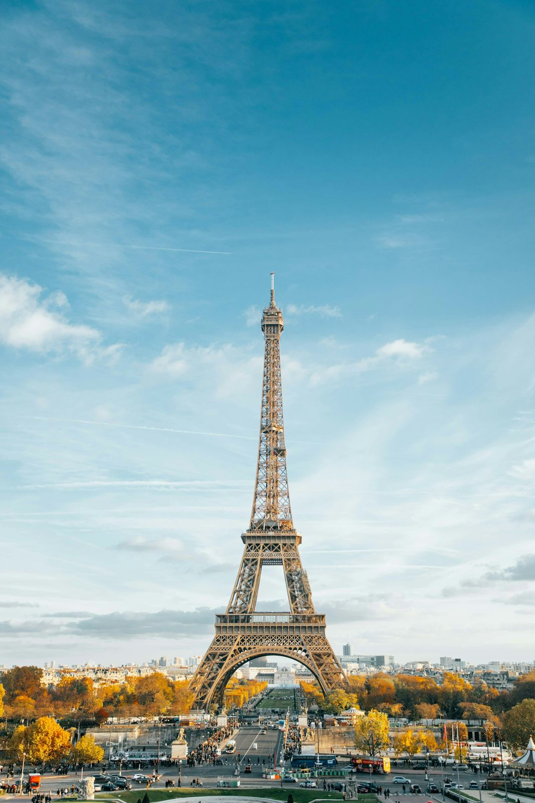

France
Paris
Facades, weather, and the familiar feeling of returning.
01 / The bright side
The postcard at dusk.
The tower, the bridge lamps and a row of stone kings: the Paris that greets every visitor.



02 / Behind it
Behind it, the street takes its time.
Balconies above a cafe, a long afternoon street, a doorway worth slowing down for.





Archive notes
Paris credits
None of these photographs were taken by me. The captions are my own observations of the images.
- The river keeps the horizonUnsplash
- Lights along the waterUnsplash
- A row of kings above the doorsDietmar Rabich, CC BY-SA 4.0
- The room above the cafeT, Unsplash
- Lines of the afternoonJLPC, CC BY-SA 3.0
- A place to stopStyx, CC BY-SA 3.0
- Shade in front of the facadeLionel Allorge, CC BY-SA 3.0
- Everyone's first photographUnsplash